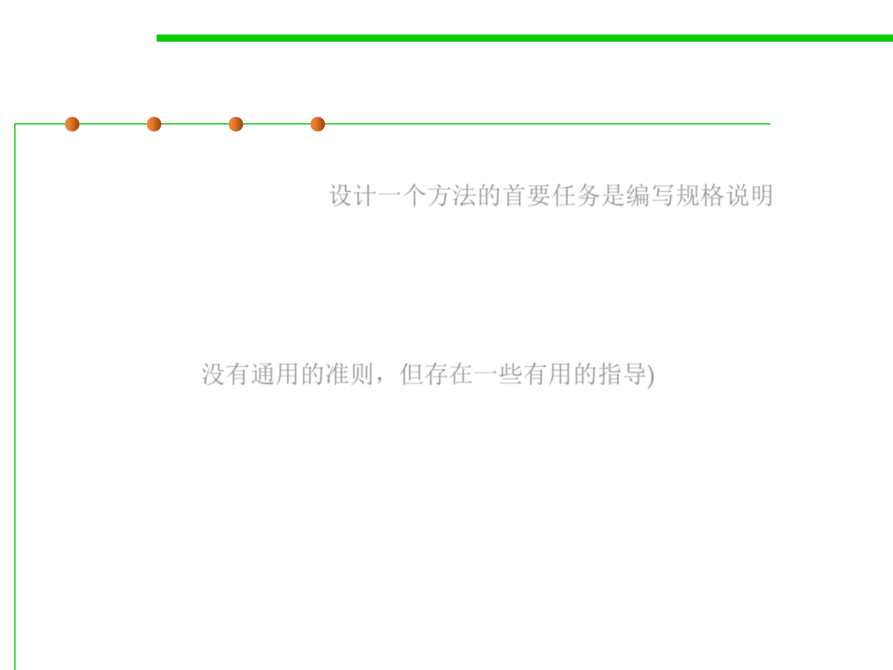

Quality of a specification
3.2 Designing Specification
▪ What makes a good method? Designing a method means primarily
writing a specification. 设计一个方法的首要任务是编写规格说明
▪ About the form of the specification: it should obviously be succinct(
简洁的), clear, and well-structured, so that it’s easy to read.
▪ The content of the specification, however, is harder to prescribe(指定
). There are no infallible(一贯正确的) rules, but there are some useful
guidelines.(没有通用的准则，但存在一些有用的指导)